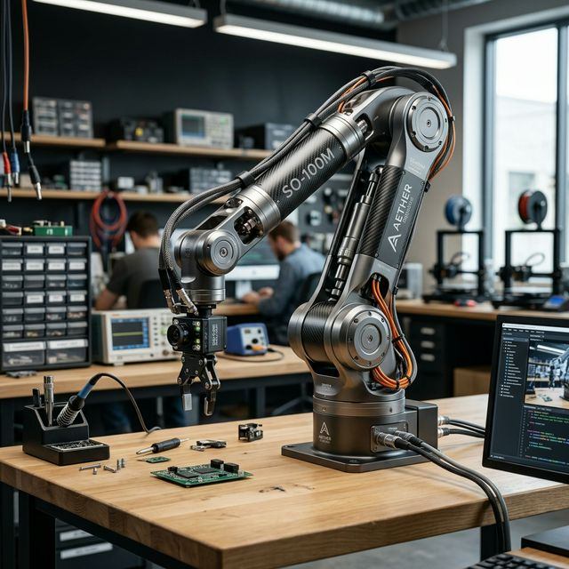

LeRobot SO-100M: The Ultimate Guide

The SO-10xARM is a cutting-edge, fully open-source robotic arm project launched by TheRobotStudio. Integrated with Hugging Face's LeRobot, it aims to lower the barrier for real-world robotics using PyTorch and imitation learning.
What's New in SO-ARM101
Wiring Optimization
Improved design prevents disconnection at joint 3 and removes motion limits.
Optimized Ratios
New motor gear ratios eliminate the need for external gearboxes.
Real-time Follow
Leader arm follows follower in real-time, crucial for human intervention training.
Hardware & Specification
The system relies on Feetech ST-3215 series bus servos. The "Arm Kit Pro" version supports 12V operation for higher torque on the follower arm.
| Component | Follower (SO101) | Leader (SO101) |
|---|---|---|
| Joint 2 | ST-3215-C001 (1:345) | ST-3215-C001 (1:345) |
| Joints 1 & 3 | ST-3215-C044 (1:191) | ST-3215-C044 (1:191) |
| Joints 4, 5, 6 | ST-3215-C046 (1:147) | ST-3215-C046 (1:147) |
| Operating Voltage | 12V (Pro) / 5V (Std) | 7.4V / 5V |
Initial System Environment
Ubuntu x86
- Ubuntu 22.04 LTS
- CUDA 12+
- Python 3.10
- Torch 2.6+
Jetson Orin
- JetPack 6.0 / 6.1
- Python 3.10
- Torch 2.3+
3D Printing Guide
Settings: PLA+, 0.4mm nozzle, 0.2mm layer, 15% infill.
Preparation: Level bed, clean with IPA. Supports everywhere > 45°.
Print: Source files via Makerworld.
Install LeRobot
It's recommended to use a verified stable repository for consistent performance.
# Clone Seeed stable version
git clone https://github.com/Seeed-Projects/lerobot.git ~/lerobot
cd ~/lerobot
# Install dependencies (feetech support)
pip install -e ".[feetech]"
conda install ffmpeg=7.1.1 -c conda-forgeMotor Configuration
Connect only one motor at a time for ID assignment. Use 5V for leader motor calibration and 12V for follower (if Pro version).
# Find arm ports
lerobot-find-port
# Setup Follower (e.g., port /dev/ttyACM0)
lerobot-setup-motors --robot.type=so101_follower --robot.port=/dev/ttyACM0
# Setup Leader (e.g., port /dev/ttyACM1)
lerobot-setup-motors --teleop.type=so101_leader --teleop.port=/dev/ttyACM1Calibration
Manual calibration ensures both arms share the same physical-to-digital mapping.
# Set permissions
sudo chmod 666 /dev/ttyACM*
# Calibrate Follower
lerobot-calibrate --robot.type=so101_follower --robot.port=/dev/ttyACM0 --robot.id=follower_armData Collection
Record 50+ episodes for a stable ACT policy. Aim for 10 episodes per location variation.
# Record locally
lerobot-record \
--robot.type=so101_follower --robot.port=/dev/ttyACM0 \
--teleop.type=so101_leader --teleop.port=/dev/ttyACM1 \
--robot.cameras="{ front: {type: opencv, index_or_path: 0, width: 640, height: 480}}" \
--dataset.repo_id=my_username/test_task \
--dataset.num_episodes=50 \
--dataset.push_to_hub=falseTraining & AI Policy
Train an ACT (Action Chunking with Transformers) policy. On an RTX 3060, 50 datasets take ~6 hours to reach optimal loss.
lerobot-train \
--dataset.repo_id=my_username/test_task \
--policy.type=act \
--output_dir=outputs/train/act_test \
--steps=300000 \
--policy.device=cudaTroubleshooting (FAQ)
sudo chmod 666 /dev/ttyACM*Citations & Resources
This guide is based on the official Seeed Studio and Hugging Face documentation. For latest updates, visit: